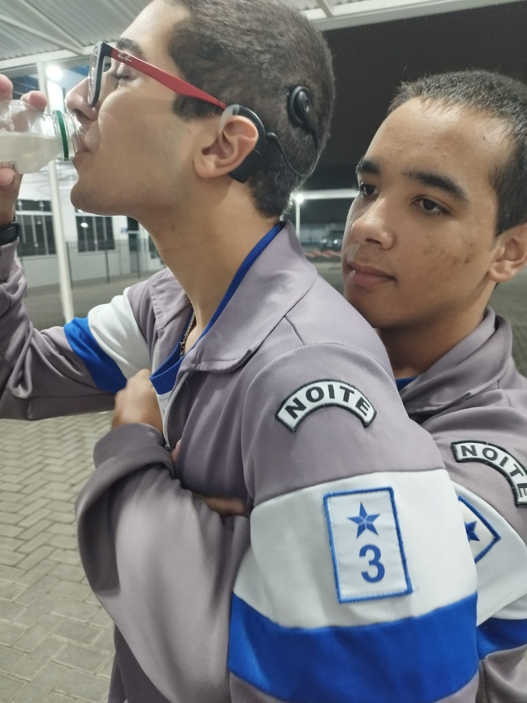
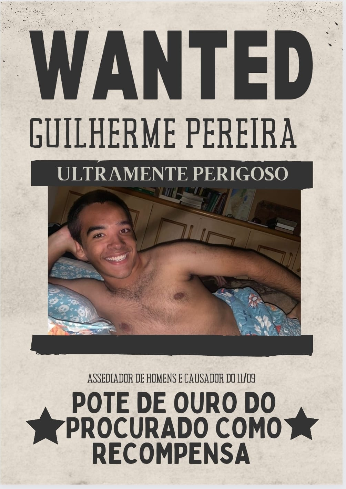

Subspécie de anão é encontrado no sul do Brasil!
A subspécie encontrada, categorizada como Guilherme, estava na cidade de Curitiba no dia 07/05.
O mesmo trajava de roupas de maide e corria pelo Parque Barigui. O ser foi contido no local.
Conhecido e apelidado como Guilherme Velasquez, se trata de uma subspécie fruto de uma cruza entre um anão e um saci perere. A espécie já havia sido registrada e os relatos confirmam sua descrição, porém o que assusta especialistas é o fato da espécie não ser vista a mais de 500 anos.
O que se sabe a seu respeito é sua linhagem, seus trajes habituais e seus hábitos alimentares. Pesquisas feitas por especialistas da ABC, Associação Brasileira de Caçadores, localizaram sua árvore genética, seus ancestrais veem diretamente da cidade de Itabaianinha no estado de Sergipe, cidade conhecida pela alta concentração de pessoas com nanismo. A partir de diversos relatos de invasões dos moradores da região, é perceptível que o homunculu gosta de Strogonoff de frango para saciar sua fome.
Porém, sua sede de tesão o faz se alimenta do sentimento de estar assediando homens, como o ocorrido com a vítima na madrugada do dia 07/05. Felizmente a sua natureza estranha o impede de se reproduzir normalmente.

O ser encontrado havia sido contido no Parque Barigui por civis que passam pelo local. Porém, após uma briga entre a criatura e os turistas, Guilherme acabou fugindo pelo lago localizado no parque. A partir dos relatos apresentados a ABC, o mesmo estava abusando do civil Fabrício Cubis com o objetivo de saciar sua sede de tesão e sua fome de frango. A equipe de reportagem localizou a vitima e solicitou relatos do mesmo sobre o caso.
Relato da vítima:
Vítima: frase não indentificada
Equipe da ABC - Não ouvi
Vítima - Quê? Ah, ta vamos lá. Era de madrugada, lá pelas 02:30, tava andando pelo parque porque estava sem sono e eu tinha achado 5 reais no chão, e quando eu me abaixei para pegar, bum!
Ele tentou introduzir dois palmos de madeira em mim!!...foi traumatizante!
Equipe da AB- Imagino que tenha sido mesmo. Bom, obrigado pelo seu relato!


O ser continua solto pelas ruas da cidade. A polícia já se deparou algumas vezes com Guilherme, porém ele acaba sendo mais rápido e consegue fugir com facilidade. As investigações e buscas continuam por parte da polícia, as autoridades solicitam a ajuda dos civis para denuncia-lo.
Caso o veja, disque +55 41 9892-2984 e denuncie!
Uma recompensa pela sua cabeça grande dele foi divulgada nessa última terça pela prefeitura de Curitiba, anunciando um pote de ouro do procurado como prêmio.
